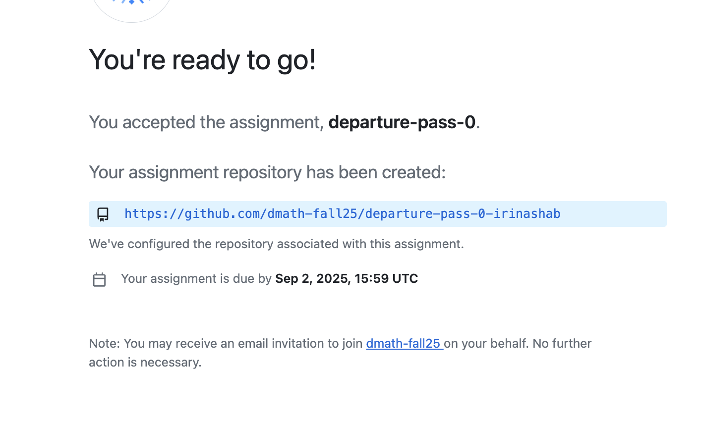

Step-by-step instructions for submitting assignments using GitHub Classroom
If you don't have a GitHub account:
jane-smith)More details: Creating an account on GitHub
Note: Verify your email address by clicking the confirmation link sent to your inbox.
Click your assignment link from email
You will see something like this:
Here I am playing a dummy student and using my gmail address, but you must use your Purchase email.
Click on your email and you are good to go!

After you click "Accept this assignment", GitHub will automatically send you a second email inviting you to join the dmath-fall25 organization. You MUST accept this invitation.
If you skip this step, you will lose access to your assignment repository and see an error message saying "You no longer have access".
The assignment link you received is for one-time use only to create your repository.
Do not bookmark the invitation link. After using it, it becomes invalid for you.
Instead, bookmark the URL of your personal repository (which looks like https://github.com/dmath-fall25/departure-pass-0-YourUsername). This is your permanent workspace for the assignment.
After accepting the assignment, you'll be redirected to your personal submission repo:
https://github.com/dmath-fall25/departure-pass-0-YourUsername
Locate ZIP file in the repsitory and click on it
Use Download raw file button to download it to your computer
Unpack the ZIP file. Use the provided TEX file as a template for your assignment.
When finished, compile your TEX file to PDF. Name your file lastname_assignment_name.pdf (e.g. smith_departure_pass_0.pdf)
Please use this exact naming convention to avoid any confusion
Pro Tip: Submit at least 1 hour before deadline to avoid last-minute issues!
Confirm your file appears in the repository with the correct name:
You'll see a timestamp confirming your submission time.
GitHub shows all deadlines in UTC (Coordinated Universal Time not EDT or EST):
Convert to your local time: Time Zone Converter
| Problem | Solution |
|---|---|
| "Repository not found" | Re-click the original assignment link |
| Can't upload files | Check file size (<100MB) - compress to ZIP if needed |
| No "Commit" button | Add a commit message at the bottom of the page |
| Uploaded wrong file | Re-upload the correct file - it will overwrite the previous version |
| Forgot GitHub password | Use GitHub password reset |
| "You no longer have access to your assignment repository" | This means you did not accept the organization invitation or GitHub failed to create your repo. Email me immediately with your GitHub username so I can re-invite you or create your repo manually. Your work is safe and will reappear once you accept. |
FEEDBACK.md filesNeed help? Email irina.shablinsky@purchase.edu
You can also reach out to fellow students who have taken CS2, Topics in CS, or Data Structures, or ask anyone from the Math/CS club for help.
GitHub Desktop App GitHub for iOS GitHub for Android GitHub Tutorial